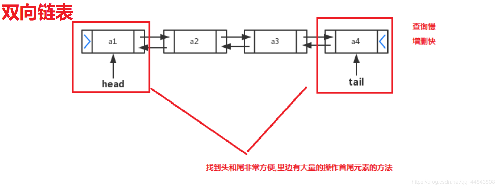
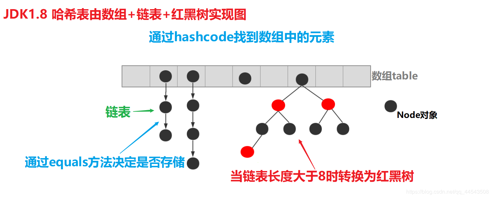
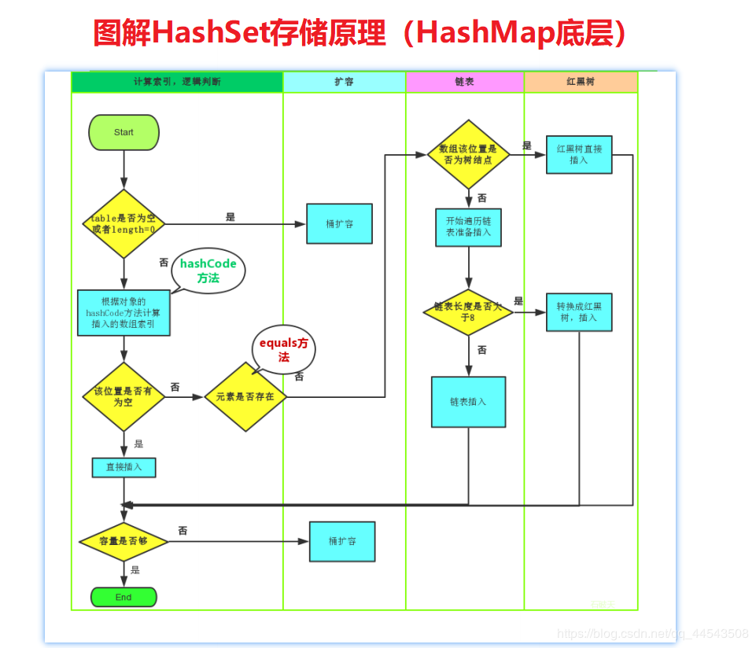

原文连接:https://www.cnblogs.com/yichunguo/p/11809866.html
目录
前言
在之前的博客文章中已经介绍了Collection接口使用，本篇将介绍Collection接口中的子类的用法，至于为啥要讲它的子类这种小白问题就不要问我了。啥？有小白在看我写的文章...不好意思不好意思，原谅我刚才说的话，请允许博主我重新组织一下语言...咳咳，至于为啥要讲Collection接口的子类呢？小白童鞋啊，Collection接口他是接口哇，接口的目的是啥？就是定义一套规范，没有具体类去实现接口，接口就毫无意义了！小白童鞋你何什左咩鸭。
还有一点就是如果对Collection接口还不熟悉的小白童鞋强烈建议先去了解Collection接口之后再看这篇文章，不然只会事倍功半！好吧，我就知道就是博主我强烈建议过了肯定还有小白童鞋不去找，没事，博主没别的目的，就是想让小白童鞋好好学java，所以我已经准备好了下面这篇文章~点击蓝色字体即可进入~Collection集合以及Iterator迭代器实现原理
@
List接口
接下来，我们一起学习Collection中的常用两个子类java.util.List集合、java.util.Set集合。
1.1 List接口介绍
java.util.List接口继承自Collection接口，在List集合元素可重复、元素有序。所有的元素是以一种线性方式进行存储的，在程序中可以通过索引来访问集合中的指定元素，而且元素的存入顺序和取出顺序一致。
List接口特点分析：
- 元素存取有序：例如，存元素的顺序是“我”、“是”、“佩”、“奇”，那么集合中，元素的存储就是按照“我”、“是”、“佩”、“奇”的顺序完成的。
- 带有索引的集合：与数组的索引是一个道理
- 元素重复：通过元素的
equals方法，来比较是否为重复的元素。
1.2 List接口中常用方法
List作为Collection集合的子接口，不但继承了Collection接口中的全部方法，还有一些根据元素索引来操作集合的特有方法，如下：
public void add(int index, E element): 将指定的元素，添加到该集合中的指定位置上。- public E get(int index):返回集合中指定位置的元素。
public E remove(int index): 移除列表中指定位置的元素, 返回的是被移除的元素。
public E set(int index, E element):用指定元素替换集合中指定位置的元素,返回值的更新前的元素。
List集合特有的方法都是跟索引相关，代码如下：
public class ListDemo {
public static void main(String[] args) {
// 创建List集合对象
List<String> list = new ArrayList<String>();
// 往 尾部添加 指定元素
list.add("安琪拉屎");
list.add("刘备胎");
list.add("廉颇妇");
System.out.println(list);
// add(int index,String s) 往指定位置添加
list.add(1,"猪脚亮");
System.out.println(list);
// String remove(int index) 删除指定位置元素 返回被删除元素
// 删除索引位置为2的元素
System.out.println("删除索引位置为2的元素");
System.out.println(list.remove(2));
System.out.println(list);
// String set(int index,String s)
// 在指定位置 进行 元素替代（改）
// 修改指定位置元素
list.set(0, "东皇太二");
System.out.println(list);
// String get(int index) 获取指定位置元素
// 跟size() 方法一起用 来 遍历的
for(int i = 0;i<list.size();i++){
System.out.println(list.get(i));
}
//还可以使用增强for
for (String string : list) {
System.out.println(string);
}
}
}List的子类
2.1 ArrayList集合
java.util.ArrayList集合数据存储的结构是数组结构。元素增删慢，查找快，由于日常开发中使用最多的功能为查询数据、遍历数据，所以ArrayList是最常用的集合。
2.2 LinkedList集合
java.util.LinkedList集合数据存储的结构是链表结构。元素增删快，查找慢的集合。
LinkedList是一个双向链表，那么双向链表是什么样子的呢？

实际开发中对一个集合元素的添加与删除经常涉及到首尾操作，而LinkedList提供了大量首尾操作的方法。下面这些方法我们作为了解即可：
public void addFirst(E e):将指定元素插入此列表的开头。public void addLast(E e):将指定元素添加到此列表的结尾。public E getFirst():返回此列表的第一个元素。public E getLast():返回此列表的最后一个元素。public E removeFirst():移除并返回此列表的第一个元素。public E removeLast():移除并返回此列表的最后一个元素。public E pop():从此列表所表示的堆栈处弹出一个元素。public void push(E e):将元素推入此列表所表示的堆栈。public boolean isEmpty()：如果列表不包含元素，则返回true。
LinkedList是List的子类，List中的方法LinkedList都是可以使用，这里就不做详细介绍，我们只需要了解LinkedList的特有方法即可。在开发时，LinkedList集合也可以作为堆栈，队列的结构使用。（了解即可）
方法代码如下：
public class LinkedListDemo {
public static void main(String[] args) {
LinkedList<String> link = new LinkedList<String>();
//添加元素
link.addFirst("大乔");
link.addFirst("小桥");
link.addFirst("老乔");
System.out.println(link);
// 获取元素
System.out.println(link.getFirst());
System.out.println(link.getLast());
// 删除元素
System.out.println(link.removeFirst());
System.out.println(link.removeLast());
while (!link.isEmpty()) { //判断集合是否为空
System.out.println(link.pop()); //弹出集合中的栈顶元素
}
System.out.println(link);
}
}好了，到这里，list集合就先告一段落。
Set接口
3.1 Set接口介绍
java.util.Set接口和java.util.List接口一样，同样继承自Collection接口，它与Collection接口中的方法基本一致，并没有对Collection接口进行功能上的扩充，只是比Collection接口更加严格了。与List接口不同的是，Set接口中元素无序且不重复，刚好全与list相反，set会以某种规则保证存入的元素不出现重复。
Set集合有多个子类，这里我们介绍其中的java.util.HashSet、java.util.LinkedHashSet这两个集合。
Set集合取出元素的方式可以采用：迭代器、增强for。
Set接口子类
4.1 HashSet集合介绍
java.util.HashSet是Set接口的一个实现类，它所存储的元素是不可重复、无序(即存取顺序不一致)。java.util.HashSet底层的实现其实是一个java.util.HashMap支持。
HashSet是根据对象的哈希值来确定元素在集合中的存储位置，因此具有良好的存取和查找性能。保证元素唯一性的方式依赖于：hashCode与equals方法。
我们先来使用一下Set集合存储，看下现象，再进行原理的讲解:
public class HashSetDemo {
public static void main(String[] args) {
//创建 Set集合
HashSet<String> set = new HashSet<String>();
//添加元素
set.add(new String("安琪拉屎"));
set.add("刘备胎");
set.add("猪八戒烟");
set.add("安琪拉屎");
//遍历
for (String name : set) {
System.out.println(name);
}
}
}输出结果如下，说明集合中不能存储重复元素：
安琪拉屎
刘备胎
猪八戒烟根据结果我们发现字符串 "安琪拉屎" 只存储了一个，也就是说重复的元素set集合不存储。
4.2 HashSet集合存储数据的结构（哈希表）
什么是哈希表呢？
在JDK1.8之前，哈希表底层采用数组+链表实现，即使用链表处理冲突，同一hash值的链表都存储在一个链表里。但是当位于一个桶中的元素较多，即hash值相等的元素较多时，通过key值依次查找的效率较低。而JDK1.8中，哈希表存储采用数组+链表+红黑树实现，当链表长度超过阈值（8）时，将链表转换为红黑树，这样大大减少了查找时间。
简单的来说，哈希表是由数组+链表+红黑树（JDK1.8增加了红黑树部分）实现的，如下图所示。

看到这张图就有童鞋要问了，这个是怎么存储的呢？看下图就明白了

总而言之，JDK1.8引入红黑树大程度优化了HashMap的性能，那么对于我们来讲保证HashSet集合元素的唯一，其实就是根据对象的hashCode和equals方法来决定的。如果我们往集合中存放自定义的对象，那么保证其唯一，就必须复写hashCode和equals方法建立属于当前对象的比较方式。
至于数据结构关于数组以及链表我之前写过，为了方便各位阅读，我就贴在下面了
啥？还要看红黑树？额...暂时还没写，如果不是特别急着看博主就往后推一点写，~毕竟忙嘛~ 实在急着看博主尽量抽空写一篇出来...
4.3源码分析
QnQ
public class HashSet<E>
extends AbstractSet<E>
implements Set<E>, Cloneable, java.io.Serializable
{
static final long serialVersionUID = -5024744406713321676L;
// 底层使用HashMap来保存HashSet中所有元素。
private transient HashMap<E,Object> map;
// 定义一个虚拟的Object对象作为HashMap的value，将此对象定义为static final。
private static final Object PRESENT = new Object();
/**
* 默认的无参构造器，构造一个空的HashSet。
*
* 实际底层会初始化一个空的HashMap，并使用默认初始容量为16和加载因子0.75。
*/
public HashSet() {
map = new HashMap<E,Object>();
}
/**
* 构造一个包含指定collection中的元素的新set。
*
* 实际底层使用默认的加载因子0.75和足以包含指定
* collection中所有元素的初始容量来创建一个HashMap。
* @param c 其中的元素将存放在此set中的collection。
*/
public HashSet(Collection<? extends E> c) {
map = new HashMap<E,Object>(Math.max((int) (c.size()/.75f) + 1, 16));
addAll(c);
}
/**
* 以指定的initialCapacity和loadFactor构造一个空的HashSet。
*
* 实际底层以相应的参数构造一个空的HashMap。
* @param initialCapacity 初始容量。
* @param loadFactor 加载因子。
*/
public HashSet(int initialCapacity, float loadFactor) {
map = new HashMap<E,Object>(initialCapacity, loadFactor);
}
/**
* 以指定的initialCapacity构造一个空的HashSet。
*
* 实际底层以相应的参数及加载因子loadFactor为0.75构造一个空的HashMap。
* @param initialCapacity 初始容量。
*/
public HashSet(int initialCapacity) {
map = new HashMap<E,Object>(initialCapacity);
}
/**
* 以指定的initialCapacity和loadFactor构造一个新的空链接哈希集合。
* 此构造函数为包访问权限，不对外公开，实际只是是对LinkedHashSet的支持。
*
* 实际底层会以指定的参数构造一个空LinkedHashMap实例来实现。
* @param initialCapacity 初始容量。
* @param loadFactor 加载因子。
* @param dummy 标记。
*/
HashSet(int initialCapacity, float loadFactor, boolean dummy) {
map = new LinkedHashMap<E,Object>(initialCapacity, loadFactor);
}
/**
* 返回对此set中元素进行迭代的迭代器。返回元素的顺序并不是特定的。
*
* 底层实际调用底层HashMap的keySet来返回所有的key。
* 可见HashSet中的元素，只是存放在了底层HashMap的key上，
* value使用一个static final的Object对象标识。
* @return 对此set中元素进行迭代的Iterator。
*/
public Iterator<E> iterator() {
return map.keySet().iterator();
}
/**
* 返回此set中的元素的数量（set的容量）。
*
* 底层实际调用HashMap的size()方法返回Entry的数量，就得到该Set中元素的个数。
* @return 此set中的元素的数量（set的容量）。
*/
public int size() {
return map.size();
}
/**
* 如果此set不包含任何元素，则返回true。
*
* 底层实际调用HashMap的isEmpty()判断该HashSet是否为空。
* @return 如果此set不包含任何元素，则返回true。
*/
public boolean isEmpty() {
return map.isEmpty();
}
/**
* 如果此set包含指定元素，则返回true。
* 更确切地讲，当且仅当此set包含一个满足(o==null ? e==null : o.equals(e))
* 的e元素时，返回true。
*
* 底层实际调用HashMap的containsKey判断是否包含指定key。
* @param o 在此set中的存在已得到测试的元素。
* @return 如果此set包含指定元素，则返回true。
*/
public boolean contains(Object o) {
return map.containsKey(o);
}
/**
* 如果此set中尚未包含指定元素，则添加指定元素。
* 更确切地讲，如果此 set 没有包含满足(e==null ? e2==null : e.equals(e2))
* 的元素e2，则向此set 添加指定的元素e。
* 如果此set已包含该元素，则该调用不更改set并返回false。
*
* 底层实际将将该元素作为key放入HashMap。
* 由于HashMap的put()方法添加key-value对时，当新放入HashMap的Entry中key
* 与集合中原有Entry的key相同（hashCode()返回值相等，通过equals比较也返回true），
* 新添加的Entry的value会将覆盖原来Entry的value，但key不会有任何改变，
* 因此如果向HashSet中添加一个已经存在的元素时，新添加的集合元素将不会被放入HashMap中，
* 原来的元素也不会有任何改变，这也就满足了Set中元素不重复的特性。
* @param e 将添加到此set中的元素。
* @return 如果此set尚未包含指定元素，则返回true。
*/
public boolean add(E e) {
return map.put(e, PRESENT)==null;
}
/**
* 如果指定元素存在于此set中，则将其移除。
* 更确切地讲，如果此set包含一个满足(o==null ? e==null : o.equals(e))的元素e，
* 则将其移除。如果此set已包含该元素，则返回true
* （或者：如果此set因调用而发生更改，则返回true）。（一旦调用返回，则此set不再包含该元素）。
*
* 底层实际调用HashMap的remove方法删除指定Entry。
* @param o 如果存在于此set中则需要将其移除的对象。
* @return 如果set包含指定元素，则返回true。
*/
public boolean remove(Object o) {
return map.remove(o)==PRESENT;
}
/**
* 从此set中移除所有元素。此调用返回后，该set将为空。
*
* 底层实际调用HashMap的clear方法清空Entry中所有元素。
*/
public void clear() {
map.clear();
}
/**
* 返回此HashSet实例的浅表副本：并没有复制这些元素本身。
*
* 底层实际调用HashMap的clone()方法，获取HashMap的浅表副本，并设置到HashSet中。
*/
public Object clone() {
try {
HashSet<E> newSet = (HashSet<E>) super.clone();
newSet.map = (HashMap<E, Object>) map.clone();
return newSet;
} catch (CloneNotSupportedException e) {
throw new InternalError();
}
}
} 说白了，HashSet就是限制了功能的HashMap，所以了解HashMap的实现原理，这个HashSet自然就通,对于HashSet中保存的对象，主要要正确重写equals方法和hashCode方法，以保证放入Set对象的唯一性,虽说是Set是对于重复的元素不放入，倒不如直接说是底层的Map直接把原值替代了（这个Set的put方法的返回值真有意思）。HashSet没有提供get()方法，愿意是同HashMap一样，Set内部是无序的，只能通过迭代的方式获得。
4.4 HashSet存储自定义类型元素
给HashSet中存放自定义类型元素时，需要重写对象中的hashCode和equals方法，建立自己的比较方式，才能保证HashSet集合中的对象唯一
创建自定义Student类
public class Student {
private String name;
private int age;
public Student() {
}
public Student(String name, int age) {
this.name = name;
this.age = age;
}
public String getName() {
return name;
}
public void setName(String name) {
this.name = name;
}
public int getAge() {
return age;
}
public void setAge(int age) {
this.age = age;
}
@Override
public boolean equals(Object o) {
if (this == o)
return true;
if (o == null || getClass() != o.getClass())
return false;
Student student = (Student) o;
return age == student.age &&
Objects.equals(name, student.name);
}
@Override
public int hashCode() {
return Objects.hash(name, age);
}
}public class HashSetDemo2 {
public static void main(String[] args) {
//创建集合对象 该集合中存储 Student类型对象
HashSet<Student> stuSet = new HashSet<Student>();
//存储
Student stu = new Student("程序员老王", 43);
stuSet.add(stu);
stuSet.add(new Student("程序员小王", 44));
stuSet.add(new Student("程序员老王", 43));
stuSet.add(new Student("程序员秃头哥", 23));
stuSet.add(stu);
for (Student stud : stuSet) {
System.out.println(stud);
}
}
}
执行结果：
Student [name=程序员小王, age=44]
Student [name=程序员老王, age=43]
Student [name=程序员秃头哥, age=23]4.5 LinkedHashSet
我们知道HashSet保证元素唯一，可是元素存放进去是没有顺序的，那么我们要保证有序，怎么办呢？在HashSet下面有一个子类java.util.LinkedHashSet，它是链表和哈希表组合的一个数据存储结构。
代码如下:
public class LinkedHashSetDemo {
public static void main(String[] args) {
Set<String> set = new LinkedHashSet<String>();
set.add("秃头哥");
set.add("地中海哥");
set.add("平头哥");
set.add("假发哥");
Iterator<String> it = set.iterator();
while (it.hasNext()) {
System.out.println(it.next());
}
}
}
结果：
秃头哥
地中海哥
平头哥
假发哥最后，欢迎各位关注我的公众号，一起探讨技术，向往技术，追求技术...